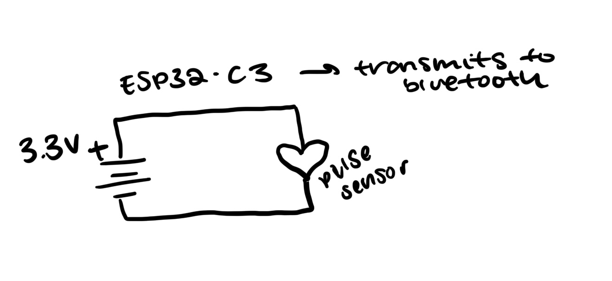
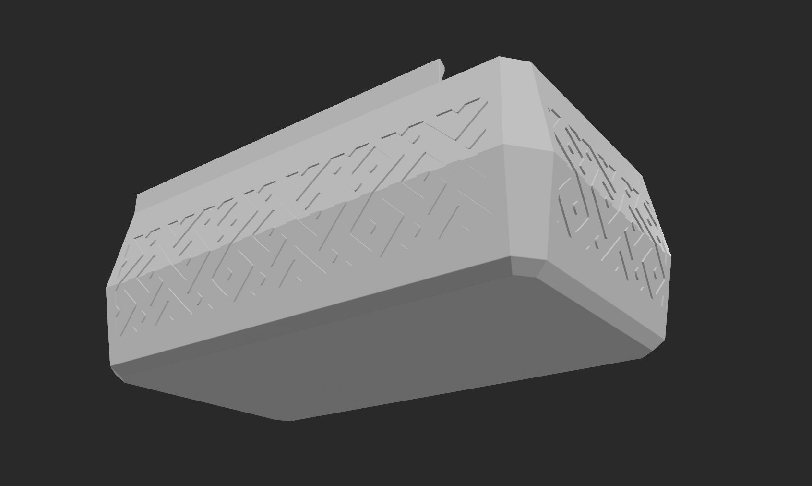
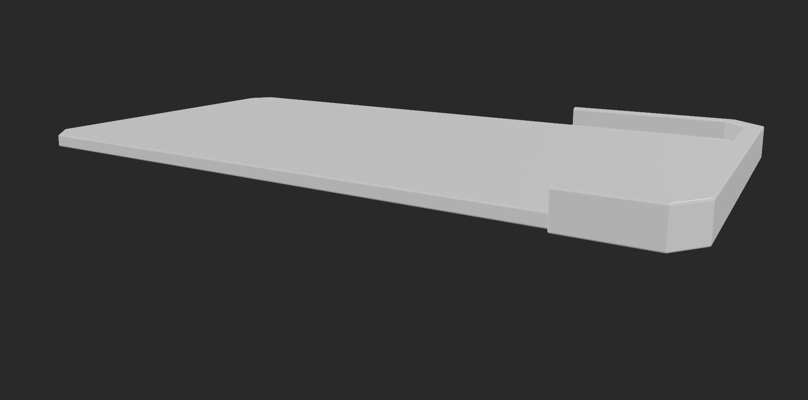

Week 7:
Minimum Viable Product
This week, after reviewing the possibilities, I switched from an EEG to heartrate monitor because of the ease of building. I use a heart rate monitor with a digital interface and bluetooth to create an "exercise-study" game.
Circuit


The simple circuit has a heart rate pulse sensor (that I re-soldered for stability) that interfaces with my computer through bluetooth. Then a readout appears on the digital interface.
Housing/Enclosure


I found box and lid files from the internet and modified it to have a hold I can thread the pulse sensor through.
Digital Output
This is how the game works: 1) a question is shown (eventually planning to integrate an LLM to formulate questions), 2) two answers are shown, 3) to answer you must either do an exercise to raise heartrate or keep heartrate the same, 4) if you get it wrong it gets shuffled to the end of the queue.